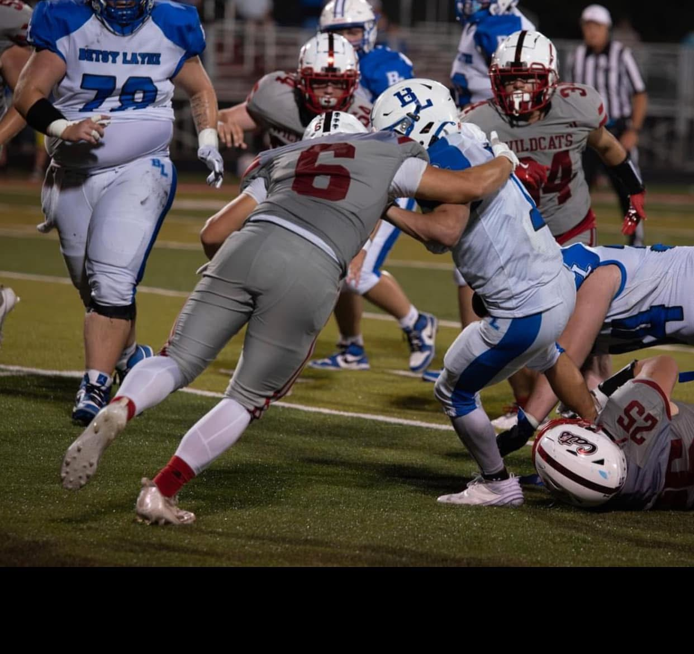
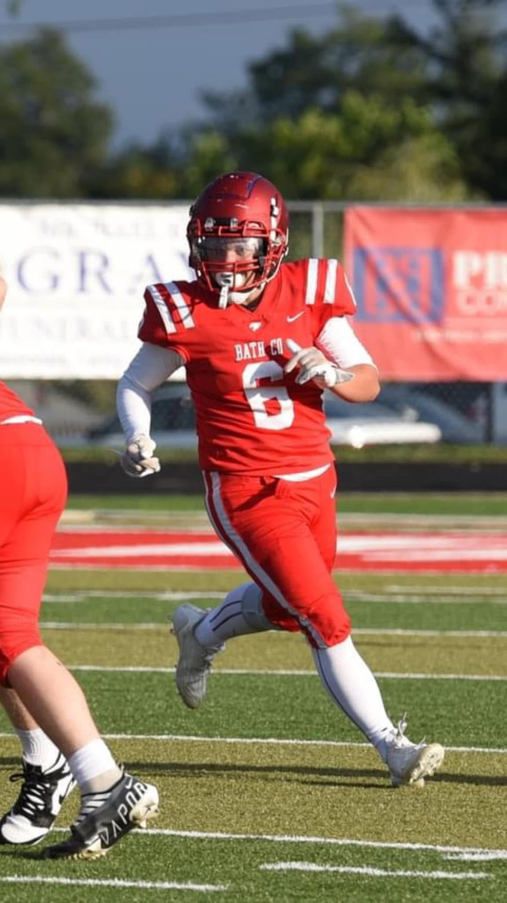

2024 Season Videos
Hudl highlights can be found here.
2024 Season Stats
| Stat | Results |
|---|---|
| Games Played | 9 |
| Pass Receptions | 4 |
| Yards Gained Receving | 23 |
| Touchdown Pass Receptions | 0 |
| Yards Gained Receiving Per Game | 2.6 |
| Touchdown Pass Receptions Per Game | 0.0 |
| Solo Tackles | 8 |
| Assisted Tackles | 6 |
| Total Tackles | 14 |
| TFL | 0 |
| Defensive Sacks | 0 |
Current Player Stats
| Stat | Results |
|---|---|
| Height/Weight | 5'9" /170 lb |
| GPA | |
| ACT | |
| Honors | |
| Bench | lbs |
| Squat | lbs |
| Deadlift | lbs |
| 40 Yd Dash | |
| Broad Jump |